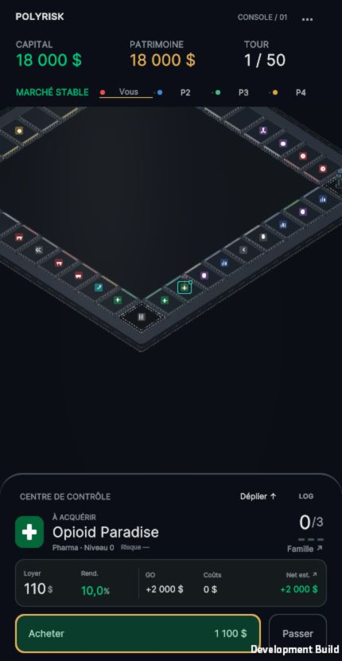
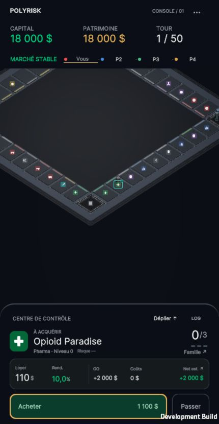
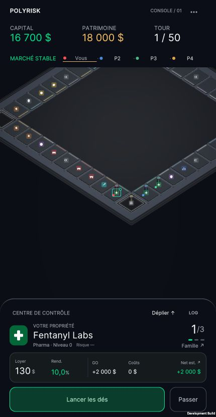
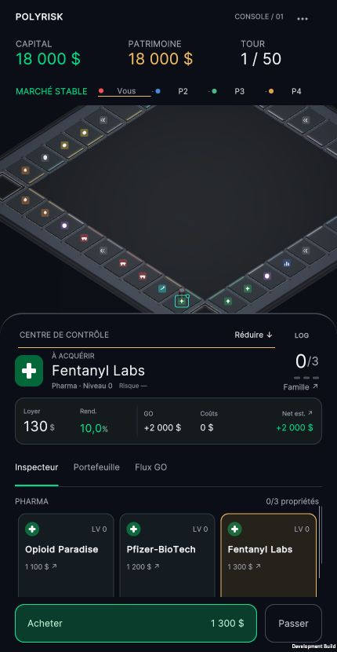
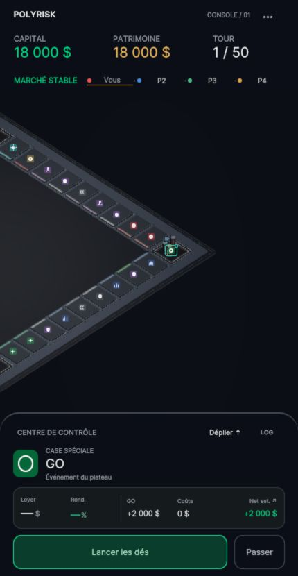
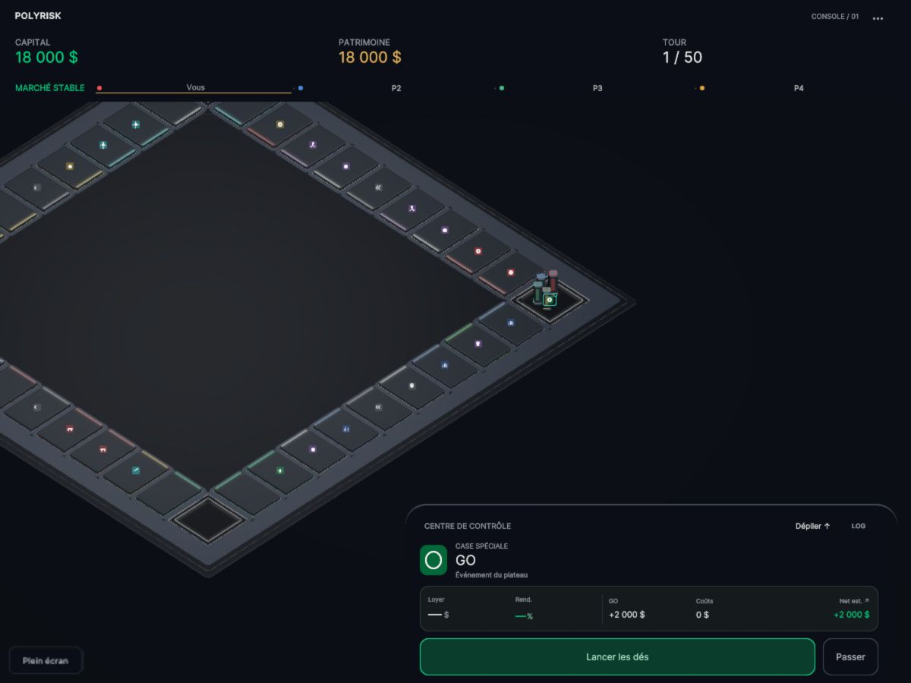

POLYRISK · CALIBRATION DU 24 OCTOBRE 2026
Graphite architectural
Des faces satinées, des arêtes plus lisibles et une lumière reçue dans la matière. Le rendu retenu n’utilise aucun bloom global.
Captures réelles WebGL sur Mac. Portrait 430 × 830 CSS ; le banc haute densité utilise un framebuffer 860 × 1660. Ce n’est pas une validation Safari ou iPhone physique. La galerie fonctionne aussi en ouvrant ce fichier HTML depuis son dossier.
Même caméra, même plateau
A reprend le profil ReflectiveNeon précédent. B montre la proposition sans bloom. Caméra orthographique et zoom 1,40 conservés. Les spécimens colorés et les pics figés n’altèrent aucun propriétaire dans le modèle.
Lecture native, cockpit et propriétés acquises en jeu
Les captures suivantes proviennent de la partie réelle. Les vues native430 ont un framebuffer430×830 ; les autres portraits ont un framebuffer 860 × 1660, affiché à430 CSS.
A — lecture native
B — lecture native
B — propriétés réellement acquises
B — cockpit déployé
Precision Glide → Magnetic Lock
Vitesse réelle, audio du jeu, aucune interpolation vidéo. Les deux trajectoires du banc utilisent le déplacement de production sans conséquence économique ; seule la restauration finale de la pose QA est coupée. Les conditions de capture réduisent la fluidité sur ce Mac.
B — déplacement court, arrivée et extinctionB — déplacement long, contacts et coinA — même trajectoire longue de calibrationB — achat réel puis tours des adversaires · 25 s avec son
Build Release
Export final sans commandes QA, sans recorder et sans bloom. Les images ci-dessous vérifient le résultat dans le vrai build Release ; elles ne constituent pas un A/B entre deux états de jeu différents.
Release — portrait 430 × 830
Release — desktop 1200 × 900
Coût et limites
| Mac · Low · prise 6 s | A | B sans bloom |
|---|
| 430×830 · moyenne | 33,68ms | 17,09ms |
| Draw calls | 72 | 56 |
| SetPass | 37 | 20 |
Prises uniques en Development, hors enregistrement et compilation ; ces chiffres ne sont ni un temps GPU ni une garantie mobile. À 860 × 1660, B mesure 83,74 ms sur ce Mac. Une impulsion courte peut être manquée lorsque les images sont très espacées. Le bloom 0,045 testé était invisible au repos et ajoutait 16 draw calls : il a été retiré.